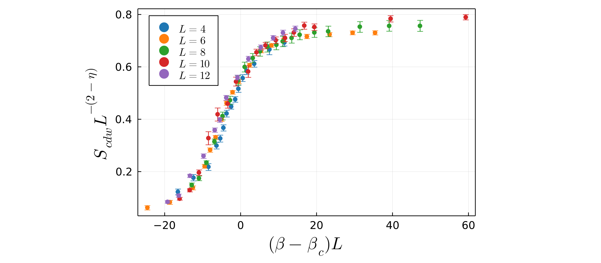
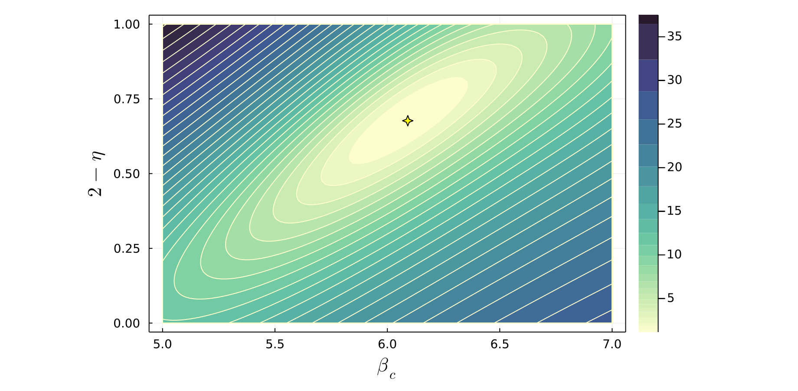
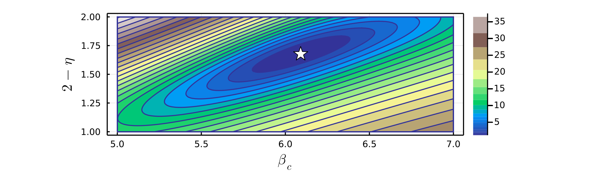

Demo 2: Two-parameter scaling
In this demo we will show how to perform finite-size scaling where two free parameters are tuned to obtain the best possible data collapse. As in Demo 1, we will use the CDW transition in the square lattice Holstein model as an example, but this time both the critical inverse temperature $\beta_c$ and the exponent $2 - \eta \equiv \gamma/\nu$ are to be optimized, i.e. we do not assume the exponent is equal to its theoretical value of $7/4$ for the Ising universality class.
Let us use the same data as in Demo 1, which as before has been loaded into an array of the form:
data_with_error = [[X_L4, Y_L4, E_L4, 4], [X_L6, Y_L6, E_L6, 6], [X_L8, Y_L8, E_L8, 8], [X_L10, Y_L10, E_L10, 10], [X_L12, Y_L12, E_L12, 12]]We now aim to rescale the data along new axes $X_s = (\beta - \beta_c)L$ and $Y_s = S_{cdw} L^{-(2-\eta)}$. We will take $\beta_c$ to the first free parameter we will tune to obtain the optimal data collapse, and denote it $v_1$, and we will take $(2-\eta)$ to be the second free parameter, and denote it $v_2$. That is, our scaled axes will be $X_s = (X - v_1)L$ and $Y_s = Y L^{-v_2}$. For two-parameter scaling, the user now must define two functions which define the scaled X and Y axes:
x_scaled(X, L, v1, v2) = (X .- v1) * Ly_scaled(Y, L, v1, v2) = Y * (L^(-1 * v2))The functions defining the $X_s$ axis should take $X$, $L$, $v_1$, and $v_2$ as arguments, while the function defining the scaled $Y_s$ axis should take $Y$, $L$, $v_1$, and $v_2$ as arguments. Note that since $X$ and $Y$ are arrays, elementwise operators such as $.-$ may be necessary.
To determine the best value of $v_1$, a search is performed between an initial value $v_{1i}$ and a final value $v_{1f}$. To determine the best value of $v_2$, a search is performed between an initial value $v_{2i}$ and a final value $v_{2f}$. The finite-size scaling method works in the same way as for one-parameter scaling, except now the method finds the pair of $v_1$ and $v_2$ values which yield the minimal overall residual. As in Demo 1, we will use invariance variance weights to perform weighted least squares.
fit_weights = [1 ./ (E_L4.^2), 1 ./ (E_L6.^2), 1 ./ (E_L8.^2), 1 ./ (E_L10.^2), 1 ./ (E_L12.^2)]However, note that since our scaled $Y_s$ axis depends exponentially on the tuned parameter $v_2$, it is important to "normalize" each calculated residual to obtain the best data collapse. To do this we will set norm_y=true when calling the two-parameter finite-size scaling function fss_two_var.
When the scaled vertical axis $Y_s$ has an explicit dependence on the tuned parameter $v_1$ and/or $v_2$, the magnitude of $Y_s$ values can vary drastically during the parameter sweep. In determining the relative quality of fit of a polynomial to the scaled data, the absolute magnitude of the sum of squared residuals therefore may not be an appropriate choice.
In this case, each individual fit residual should be divided by the magnitude $Y_s$ of the corresponding data point. Then, the sum of the squares of these "normalized" residuals will provide a true measure of the relative quality of the polynomial fitting.
To do this, both fss_one_var and fss_two_var takes an optional boolean argument norm_y. Set norm_y=true to normalize the fit residuals.
The next step is to call the function fss_two_var to perform the finite-size scaling.
scaled_data, residuals, min_res, best_v1, best_v2 = fss_two_var(data=data_with_error, xs=x_scaled, ys=y_scaled, v1i=5.0, v1f=7.0, n1=100, v2i=1.0, v2f=2.0, n2=100, p=4, weights=fit_weights, norm_y=true)where data is the single array of data defined previously, and xs and ys are the functions previously defined for the scaled axes. Here v1i and v1f are the start and end points of the parameter search for $v_1$ (in this example $\beta_c$), where n1 is the number of values of $v_1$ in this range to check. Similarly, v2i and v1f are the start and end points of the parameter search for $v_2$ (in this example $(2-\eta)$), where n2 is the number of values of $v_2$ in this range to check. The integer degree $p$ of the polynomial must also be specified, typically $4 \leq p \leq 8$ is sufficient.
The function fss_two_var returns five variables: an array scaled_data where each element is an array of $[X_s, Y_s, E_s, L]$ data for a given lattice size; a two-dimensional array residuals of dimension (n2, n1) which stores the sum of squared residuals for each pair of $(v_2, v_1)$ values checked; a scalar min_res which is the minimum value of the array residuals; and scalars best_v1 and best_v2 which are the values of $v_1$ and $v_2$ which gave the smallest overall residual. By default it will also print out the values of best_v1, best_v2, and min_res:
Optimal v1 value: 6.090909090909091
Optimal v2 value: 1.6767676767676767
Smallest residual: 1.158515739950633 At this point, you can again call the function plot_data, passing in the scaled_data returned by the fss_two_var function. This will produce a plot of the optimal data collapse, i.e. the scaled data with $v_1$ set to best_v1 and $v_2$ set to best_v2:
plot_data(scaled_data)
Contour plot for two-parameter scaling
When performing two-parameter scaling, it is often useful to produce a contour plot showing how the quality of the data collapse varies in the $(v1, v2)$ plane. To make this plot, use the function plot_contour, passing in the two-dimensional array residuals returned by fss_two_var. You will also need to pass in the same values of v1i, v1f, n1, v2i, v2f, and n2 which were used in fss_two_var. You will also need to specify how many contour lines are drawn with the argument levels. levels can be either an integer or an array of values. If an array of values is specified, only contours corresponding to these values be drawn on the plot. If levels is an integer, this sets the total number of contour lines which will be drawn. The values represented by the contour lines can either be equally spaced or logarithmically spaced, which is set by the boolean argument logspace. Often logarthmic spacing is best in order to get a reasonable number of contour lines plotted near the minima, and logspace=true by default. A solid color fill between contour lines will be drawn if the boolean argument fill; by default fill=true.
plot_contour(residuals, v1i=5.0, v1f=7.0, n1=100, v2i=0.0, v2f=1.0, n2=100, levels=30, fill=true, logspace=true, xlabel=L"\beta_c", ylabel=L"2 - \eta") The plot_contour function produces a contour plot displaying the sum of squared residuals in the $(v_1, v_2)$ plane, where a smaller value corresponds to a better quality data collapse. The minimum residual value is also indicated by a marker on the plot, showing the location of (best_v1, best_v2):

Note that various plot attributes such as the color scheme used, plot dimensions, marker size, marker color, marker shape, axes labels, and fontsizes can be customized when calling the function plot_contour. For example, the color argument can be set to any color scheme supported by Plots.jl. See the docstrings of plot_contour or the Methods page for full details. Below is a contour plot of the same residuals data as above, where several of these plot attributes have been modified.
plot_contour(residuals, v1i=5.0, v1f=7.0, n1=100, v2i=1.0, v2f=2.0, n2=100, levels=25, fill=true, logspace=true, xlabel=L"\beta_c", ylabel=L"2 - \eta", color=:terrain, markersize=7, markershape=:star5, markercolor=:white, size=(800,300)) 
To use LaTeX when specifying axes labels, you can use a LaTeXString e.g. L"\beta_c". To use the LaTeXStrings.jl package, simply enter using LaTeXStrings.